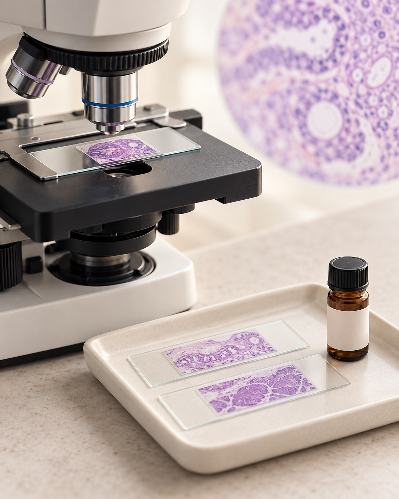
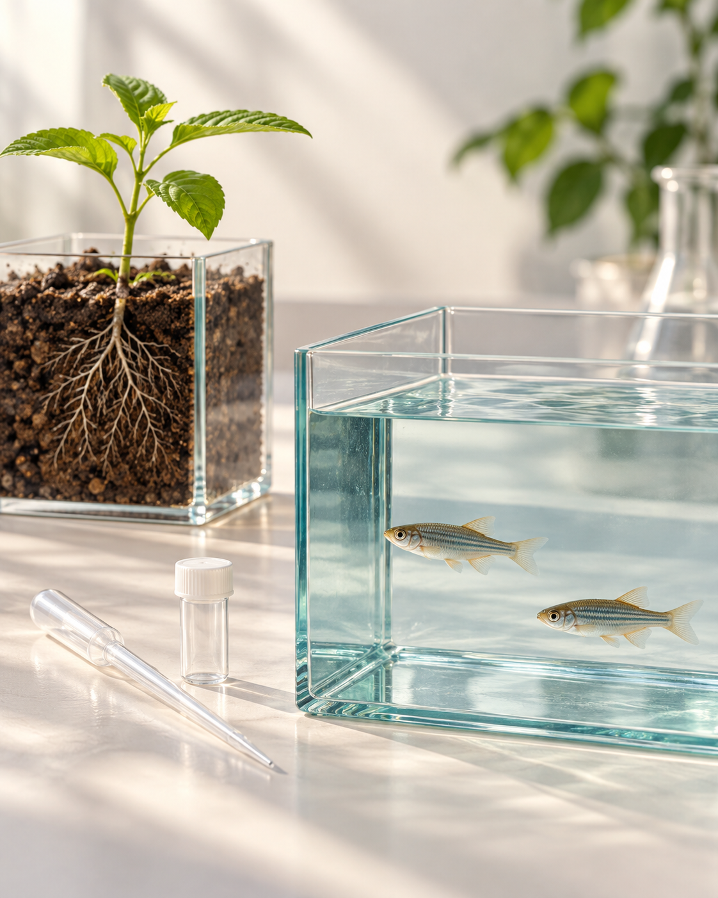
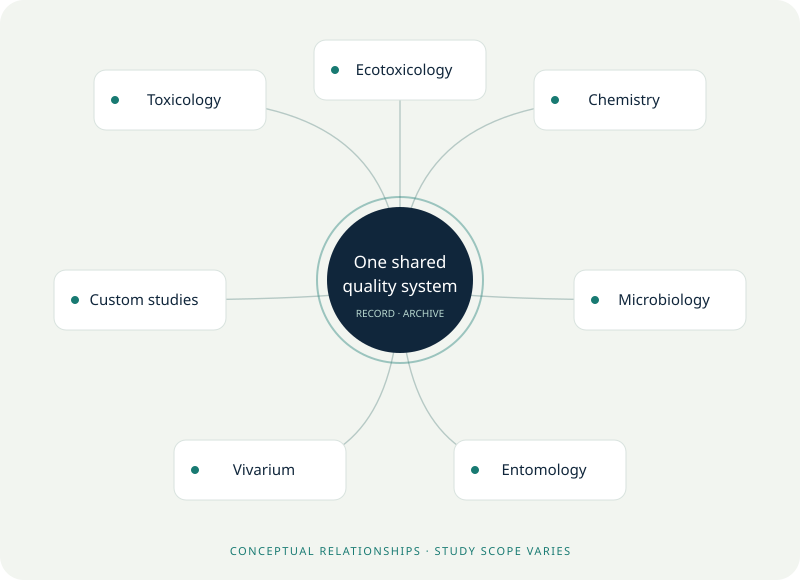

Design reference only. Header uses a text placeholder; implementation must retain NSRL’s existing official logo. Images below are conceptual illustrations.
One recognisable family of division icons.
Toxicology
Ecotoxicology
Chemistry
Microbiology
Entomology
Vivarium
Custom Studies
Two division image replacements.
Warm material detail and clear subject matter replace luminous organs and fictional combined apparatus. Native delivered files are 1122 × 1402 pixels.

Toxicology — conceptual illustration.
Ecotoxicology — conceptual illustration.Explain the relationship.
Exactly seven divisions connected to a shared quality system. Selection highlights the relationship; it never implies a fixed chronology.

Try the interactive version
Use a trace only where it adds meaning.

The trace is illustrative, without measured data. It draws once and becomes static. Background motifs are static and optional.
Files for your developer